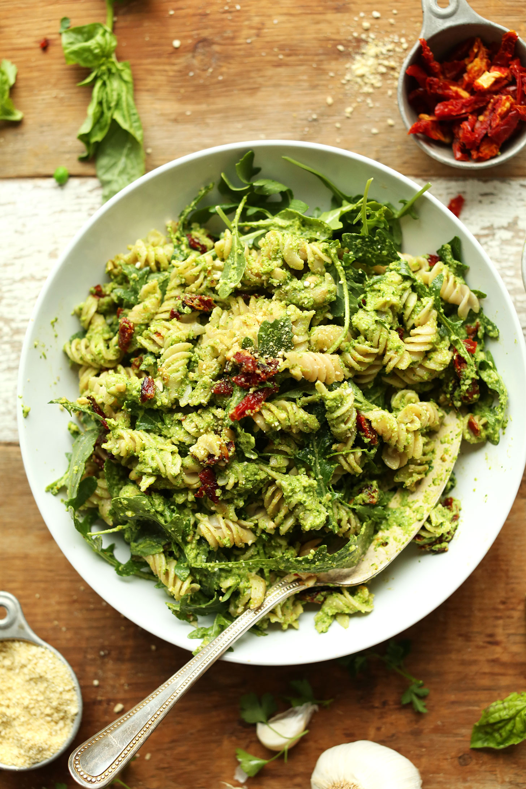

Home
Recipes
▼
French Toast
Yellow Curry
Green Pasta
About
Green Pasta
★
★
★
★
★

Cuisine: Italian
Serves 2, serving size: 2 bowls
Total time: 30 mins
Ingredients
0.5x
1x
2x
6 oz pasta of choice
1/3 cup pesto
3 cups broccoli
1 oz spinach
1 tbsp olive oil
2 cloves garlic
1/4 cup parmesan
Instructions
Boil pasta in a pot according to directions on packaging, or until al dente.
Meanwhile, bring a large saucepan to medium heat. Add olive oil and minced garlic, watching closely so it does not burn. Cook until fragrant.
Add zucchini and broccoli. Stir fry for 2-3 mins. Optional: use pasta water to lightly steam veggies.
Drain pasta and add to the pan. Add pesto. Season with salt, pepper, & red crushed pepper to taste. Mix well until combined.
Serve warm in a bowl with parmesan over top.